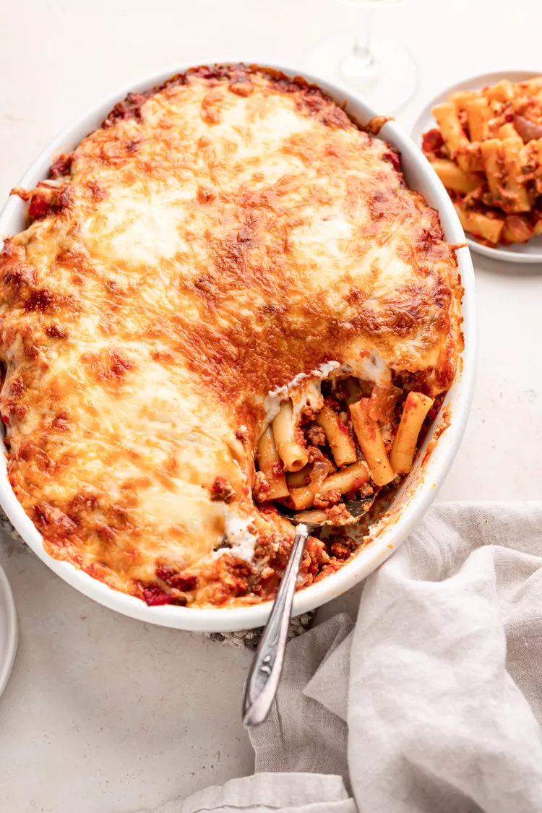

Ziti

What is baked ziti?
Baked ziti is a classic Italian-American pasta dish. It's similar to lasagna, but instead of layering the
ingredients, you mix them all together before baking. It's named after the pasta shape "ziti", which is a
medium-sized tube pasta, similar to penne.
Ingredients
- 1 lb ziti pasta
- 1 lb ground beef or Italian sausage
- 1 onion, chopped
- 2 cloves of garlic, minced
- 1 jar (24 oz) of marinara sauce
- 1/2 cup of water
- 1 cup ricotta cheese
- 1 egg
- 1/2 teaspoon salt
- 1/4 teaspoon pepper
- 2 cups shredded mozzarella cheese
- 1/2 cup grated Parmesan cheese
Steps to cook
- Preheat your oven to 375 degrees F (190 degrees C).
- Cook the pasta according to package instructions until it's just under al dente. You want it a bit firm since it
will continue to cook in the oven.
-
While the pasta is cooking, sauté the onion, garlic, and ground meat in a large skillet over medium heat until
the meat is browned and the onions are tender. Drain the excess fat.
- Stir the marinara sauce and water into the meat mixture. Simmer for about 5 minutes.
-
In a separate bowl, mix together the ricotta cheese, egg, salt, and pepper.
- Drain the cooked pasta and return it to the pot. Add the ricotta mixture, half of the mozzarella cheese, and
half of the Parmesan cheese. Mix well to evenly distribute the cheese.
-
Pour half of the meat sauce into a baking dish. Add the pasta and cheese mixture on top. Then pour the rest of
the meat sauce over the pasta. Sprinkle the remaining mozzarella and Parmesan cheese on top.
-
Cover the dish with aluminum foil and bake for 20 minutes. Then remove the foil and bake for an additional 10-15
minutes, or until the cheese is golden and bubbly.
-
Let the baked ziti cool for a few minutes before serving.